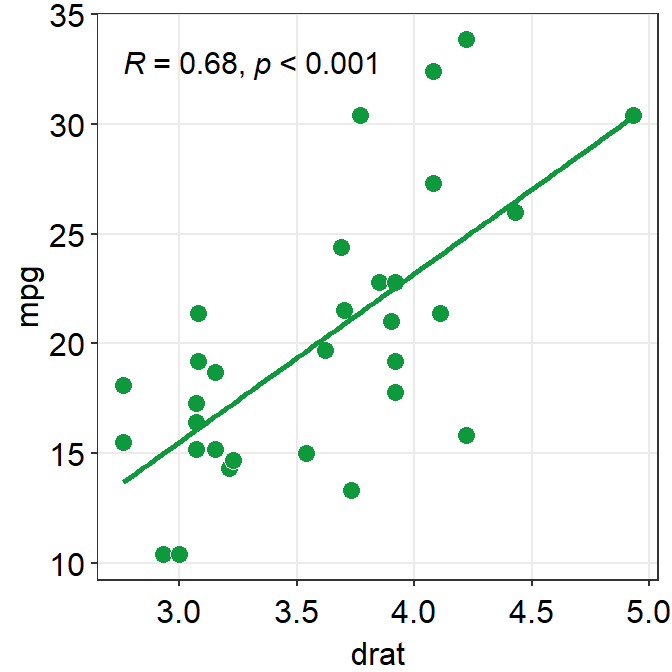
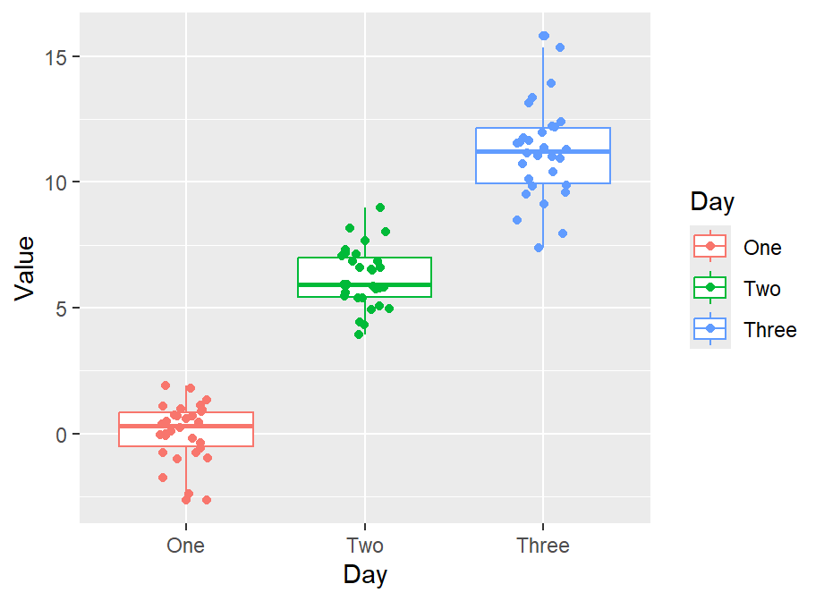
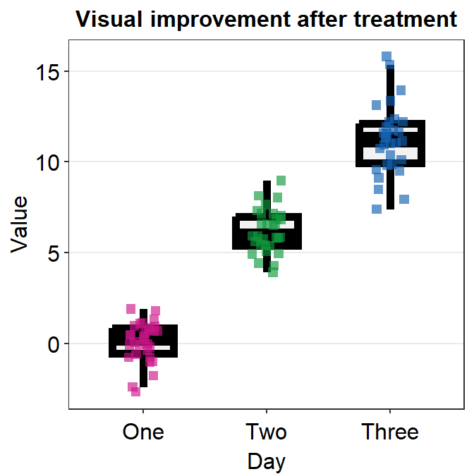
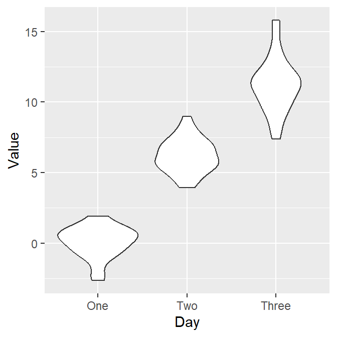
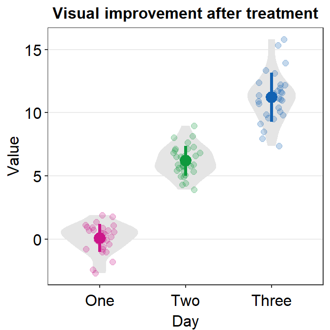

Chapter 4 Boxplot and Violin Plot
Load these packages by typing the codes below.
library(tidyverse) # it has ggplot2 package
library(cowplot) # it allows you to save figures in .png file
library(smplot2)4.1 Upload sample data (csv file) in RStudio
4.1.1 Download requirements
Download data.csv from https://www.smin95.com/data.csv
Put the file data.csv in your LearnR folder, where you will create a new script using RStudio.
4.1.2 Before we get started
First, within RStudio, set LearnR folder as your working directory by clicking: Session -> Set Working Directory -> Choose Directory.
Then, load these three packages with the library() function: ggplot2, cowplot and smplot2.
The tidyverse package includes the ggplot2 package. For this reason, instead of loading ggplot2, you can load tidyverse instead. tidyverse has other packages beside ggplot2, such as dplyr, which is also necessary to handle and manage data.
Remember from the last chapter that:
Functions from the ggplot2 package include
ggplot()and other geom functions such asgeom_point(),geom_smooth(), etc.Functions from the smplot2 package improve the ggplot2 graphs visually. However, they are not required to make a graph using ggplot2.
The cowplot package has a function called
save_plot, which is very useful for saving a graph as an image.
4.1.3 data.csv
To start off, let’s load data.csv in R from your LearnR folder. Then store the loaded data into a variable called df.
We will use a function from the tidyverse package called read_csv().
- For more information, type ?read_csv().
df <- read_csv('data.csv')## Rows: 90 Columns: 3
## -- Column specification ------------------------------------------------
## Delimiter: ","
## chr (2): Subject, Day
## dbl (1): Value
##
## i Use `spec()` to retrieve the full column specification for this data.
## i Specify the column types or set `show_col_types = FALSE` to quiet this message.If you get an error such as object 'data.csv' not found, make sure you set your working directory in the LearnR folder. Also make sure you have downloaded your data and saved it in the LearnR folder.
You can view the entire data frame by typing View(df).
View(df)There are three columns in df.
The first column (Subject) is the subject number. S1 means the first subject, and S2 second.
The second column (Value) is the data. It contains numbers.
The third column (Day) is the day of testing. There are three days of measurement: One, Two and Three.
What is the data about?
30 patients were tested across three days to see if there was an improvement in their visual function (Value). The higher value, the better the vision.
Day One: first day of the study. This is the baseline value. After this measurement, patients received treatment (ex. drug, surgery, etc).
Day Two: second day of the study. This is the one day after receiving the treatment.
Day Three: third day of the study. This is two days after receiving the treatment.
As some of you may have noticed, the data are all made from statistical simulations (i.e., fake data).
4.1.4 read_csv('data.csv')
Let’s use the variable df to store the output from data.csv.
df is shortened from data frame, which refers to a structure of the data that is commonly used for data analysis.
In fact, ‘data.csv’ has the structure of a typical data frame.
Each column is a variable.
Each row represents an observation
In future, I suggest you save data that has a similar structure to that of df.
- Put your own data in Microsoft Excel and save it as a csv file to load it on R.
Exercise: Open data.csv using Microsoft Excel. Change the name of third column into Group. Then, save it as data2.csv. What does this data frame indicate now?
It indicates there are 30 individuals for each group. Also, there are 3 groups, so there are 90 individuals total. So, it might be better to change the subject number so each person has a unique label, such as S1 to S90.
4.2 Boxplot
4.2.1 What is a boxplot?
This is the basic structure of the boxplot.

- The line in the middle is the median of the data.
- The first quartile is the lower 25% of the data.
- The third quartile is the 75% percentile of the data.
- The interquartile range is the distance between the first and third quartiles.
- The lower whisker is the lowest data point without outliers.
- The upper whisker is the highest data point without outliers.
- The point that lies outside the whisker is the outlier.
4.2.2 Boxplot vs bar graph
Here is the basic structure of the bar graph.
## Warning: Using `size` aesthetic for lines was deprecated in ggplot2 3.4.0.
## i Please use `linewidth` instead.
- The boxplot is more informative than bar graph.
- The bar graph only shows the mean (average) of the data and the standard error.
- The bar graph does not represent the distribution very well. The narrow errorbar is quite misleading here.
- For this reason, let’s focus on drawing a boxplot.
4.2.3 Boxplot using ggplot2
We want to plot Value (y-axis) from each Day (x-axis). As always in ggplot, let’s start by writing ggplot().
Make sure you specify the data to plot by writing data = df in ggplot(). Also, you will need to specify the x- and y-axes in the mapping argument within ggplot().
x = Dayandy = Value.
ggplot(data = df, mapping = aes(x = Day, y = Value))
However, as we learned in the last lesson, ggplot requires geom objects to plot something. Last time we used geom_point(), which plots points. - Now, let’s use geom_boxplot() to plot a boxplot.
ggplot(data = df, mapping = aes(x = Day, y = Value)) + geom_boxplot()
Here’s the boxplot! But I think there is a problem here. Day Three precedes Day Two in the x-axis.
- Exercise: Why do you think Three appeared first?
4.2.4 Problem: Alphabetical order
The issue with the boxplot is that the x-axis follows an alphabetical order.
- Th precedes Tw. In short, R does not seem to know that we want the order to be One -> Two -> Three.
R has decided to follow the alphabetical order is because the column Day is shown as <chr>, which means character.
df## # A tibble: 90 x 3
## Subject Value Day
## <chr> <dbl> <chr>
## 1 S1 -0.752 One
## 2 S2 0.220 One
## 3 S3 -1.00 One
## 4 S4 1.91 One
## 5 S5 0.395 One
## 6 S6 -0.985 One
## 7 S7 0.585 One
## 8 S8 0.886 One
## 9 S9 0.691 One
## 10 S10 -0.366 One
## # ... with 80 more rows- Note that the Subject column is also considered as
<chr>(characters) because it contains texts/alphabets. - The Value column is categorized as
<dbl>, which means double.- Double basically means numbers.
In R, character is also referred to as string. They mean the same thing. Here are more examples of characters/strings.
a <- 'R is very useful!'
b <- 'Dogs are so cute.'
c <- 'Clarinet is the best.'In these examples, you have stored the characters/strings in the variables a, b and c.
4.2.5 Displaying characters in a non-alphabetical order
Factors are important when you want to display characters in non-alphabetical order. Factors are variables that have a limited number of different values.
For example, if a dataset has two groups (controls and patients), these can be referred to as factors.
However, when you are using read_csv() to load data into RStudio, read_csv() will interpret texts/alphabets as characters, not factors.
- This is a problem when you need a non-alphabetical order, such as one -> two -> three and Jan -> Feb -> Mar -> Apr.
To resolve this problem, you will need to change the characters into factors using factor() function.
df$Day <- factor(df$Day, levels = c('One','Two','Three'))Remember that <- means equivalent. Also, $ of a data frame can extract a specific column
- You can also type
df$Valueand run it to see what happens. You will get all values of the second column Value.
df$ValueBy using factor(), you are making the Day column of df into factor from character. However, you will need to store the factored version of df$Day by using <-. If not, df$Day will stay as character.
levels argument in factor() allows you to specify the order of the factors.
For more information about factors, please check Chapter 15 of R for Data Science (https://r4ds.had.co.nz/factors.html).
- Note: you do not have to understand this part 100%. However, if you do encounter similar issues, I suggest you resolve it with the solution above.
4.2.6 Double-check if the ‘Day’ column is factor
- Let’s open the data frame df again.
df## # A tibble: 90 x 3
## Subject Value Day
## <chr> <dbl> <fct>
## 1 S1 -0.752 One
## 2 S2 0.220 One
## 3 S3 -1.00 One
## 4 S4 1.91 One
## 5 S5 0.395 One
## 6 S6 -0.985 One
## 7 S7 0.585 One
## 8 S8 0.886 One
## 9 S9 0.691 One
## 10 S10 -0.366 One
## # ... with 80 more rowsNow we see <fct> in the Day column. This means that the column is now factor, not character.
4.2.7 Back to boxplot using ggplot2
Now let’s draw the boxplot again.
ggplot(data = df, mapping = aes(x = Day, y = Value)) + geom_boxplot()Since we have converted the Day column of df into factor, the boxplot successfully plots each day in the correct order.
4.2.8 A boxplot with individual data
Sometimes, it is preferable to plot individual data on top of the boxplot. There are many ways to do this. Here is a simple solution by using geom_jitter(). For more information, type ?geom_jitter.
ggplot(data = df, mapping = aes(x = Day, y = Value)) + geom_boxplot() +
geom_jitter()
I think the points are too spread. So let’s set the width of the spread in geom_jitter() to 0.15. Also, let’s apply a different color of points for each Day.
ggplot(data = df, mapping = aes(x = Day, y = Value, color = Day)) +
geom_boxplot() +
geom_jitter(width = 0.15)
Now we can make the boxplot prettier with sm_minimal(), which removes all grids in the graph. We can also set legends = FALSE to remove the legends.
Let’s also add a title Visual improvement after treatment using ggtitle(), which is a function from the ggplot2 package.
ggplot(data = df, mapping = aes(x = Day, y = Value, color = Day)) +
geom_boxplot() +
geom_jitter(width = 0.15) +
sm_minimal(legends = FALSE) +
ggtitle('Visual improvement after treatment')Now let’s set the colors using sm_palette(). Remember from the last lesson that we set the colors in ggplot by using scale_color_manual() for points without borders.
- Let’s write
3insm_palette()because we need 3 colors (for each Day). It will automatically extract 3 different colors from the color palette in smplot2.
ggplot(data = df, mapping = aes(x = Day, y = Value, color = Day)) +
geom_boxplot() +
geom_jitter(width = 0.15) +
sm_minimal(legends = FALSE) +
ggtitle('Visual improvement after treatment') +
scale_color_manual(values = sm_palette(3))
If you need horizontal grids, you can simply replace sm_minimal() with sm_hgrid(). There is also sm_vgrid() but I will not try it here because it is not so useful in our context.
ggplot(data = df, mapping = aes(x = Day, y = Value, color = Day)) +
geom_boxplot() +
geom_jitter(width = 0.15) +
sm_hgrid(legends = FALSE) +
ggtitle('Visual improvement after treatment') +
scale_color_manual(values = sm_palette(3))
4.2.9 geom_boxplot() vs sm_boxplot()
geom_boxplot() does not show individual data. You need to add geom_jitter().
sm_boxplot() shows both a boxplot and jittered individual data. It automatically uses sm_hgrid(). Also it stores defaults that are aesthetically pleasing and has flexibility with which you can entirely overturn the defaults.
ggplot(data = df, mapping = aes(x = Day, y = Value, color = Day)) +
sm_boxplot() +
ggtitle('Visual improvement after treatment') +
scale_color_manual(values = sm_palette(3))As you can see the default of the point is slightly transparent (alpha = 0.65'). If you prefer it to change it to opaque with white borders, we can by specifying the parameters of the points, point.param, which is an argument that is found across multiple functions of smplot2.
In arguments that look likexxx.params = list(). sm_boxplot() has two xxx.params: point.param and boxplot.param.
Parameters in
point.paramare used ingeom_point()to plot the points.Parameters in
boxplot.paramare used ingeom_boxplot()to plot the boxplot.
In the default of sm_boxplot(), the shape of the point is 16. This information can be accessed by seeing the defaults within the help page of ?sm_boxplot.
We could change the shape to 21 so that the points have the circular shape with borders. In the case of shape = 21, fill decides the filling color rather than color, which sets the color of the border. Therefore, the variable in aes() has to be changed so that there is unique filling color for each day as fill = Day.
Also, scale_color_manual() is now used to apply distinct border colors of the points rather than their filling colors. So now we should use scale_fill_manual().
ggplot(data = df, mapping = aes(x = Day, y = Value, fill = Day)) +
sm_boxplot(point.params = list(shape = 21, color = 'white',
size = 2.5)) +
ggtitle('Visual improvement after treatment') +
scale_fill_manual(values = sm_palette(3))
Notice that when you leave point.params = list() as empty or filled, then the aesthetic defaults of sm_boxplot() will disappear, such as the transparency of the points (alpha = 0.65). To fully restore the defaults while keeping the shape of the points, you will need to specify all the parameters.
ggplot(data = df, mapping = aes(x = Day, y = Value, fill = Day)) +
sm_boxplot(point.params = list(shape = 21, color = 'white',
size = 2.5, alpha = 0.65)) +
ggtitle('Visual improvement after treatment') +
scale_fill_manual(values = sm_palette(3))
Also, this is an example that shows that the defaults (i.e., transparency) are no longer maintained when point.params = list() is written but not filled.
ggplot(data = df, mapping = aes(x = Day, y = Value, color = Day)) +
sm_boxplot(point.params = list()) +
ggtitle('Visual improvement after treatment') +
scale_color_manual(values = sm_palette(3))
Another way to change the shape is to not use point.params = list(). You could directly use shape argument within sm_boxplot() but this could affect other aesthetic components.
ggplot(data = df, mapping = aes(x = Day, y = Value, color = Day)) +
sm_boxplot(shape = 15) +
ggtitle('Visual improvement after treatment') +
scale_color_manual(values = sm_palette(3))
In this case, we are lucky because shape is an aesthetic parameter that does not affect the boxplot, which is drawn using geom_boxplot(). We can set the size and transparency explicity in point.params().
ggplot(data = df, mapping = aes(x = Day, y = Value, color = Day)) +
sm_boxplot(shape = 15, point.params = list(alpha = 0.65,
size = 2.5)) +
ggtitle('Visual improvement after treatment') +
scale_color_manual(values = sm_palette(3))
What happens if you explicittly write boxplot.params = list() in sm_boxplot()?
ggplot(data = df, mapping = aes(x = Day, y = Value, color = Day)) +
sm_boxplot(boxplot.params = list()) +
ggtitle('Visual improvement after treatment') +
scale_color_manual(values = sm_palette(3))
Now the defaults of the boxplot are gone. The boxplot’s fill is white, and the line colors are no longer black. Also, the width is wider now than the default (width = 0.5).
ggplot(data = df, mapping = aes(x = Day, y = Value, color = Day)) +
sm_boxplot(boxplot.params = list(fill = 'gray95', width = 0.5,
color = 'black')) +
ggtitle('Visual improvement after treatment') +
scale_color_manual(values = sm_palette(3))
You can remove the label of the outlier by specifying outlier.shape = NA, which is an argument within geom_boxplot(), in boxplot.params.
ggplot(data = df, mapping = aes(x = Day, y = Value, color = Day)) +
sm_boxplot(boxplot.params = list(fill = 'gray95', width = 0.5,
color = 'black', outlier.shape = NA)) +
ggtitle('Visual improvement after treatment') +
scale_color_manual(values = sm_palette(3))
Now we are essentially back to where we were.
In addition, you can also change the size as a generic aesthetic parameter without affecting others because the size of the boxplot (boxplot.params) already has a specific default.
ggplot(data = df, mapping = aes(x = Day, y = Value, color = Day)) +
sm_boxplot(shape = 15, size = 2) +
ggtitle('Visual improvement after treatment') +
scale_color_manual(values = sm_palette(3))
Important: The generic parameter (... in ex. sm_boxplot()) cannot overturn the smplot2’s default unless the user makes the default gone by explictly writing param.xxx = list().
ggplot(data = df, mapping = aes(x = Day, y = Value, color = Day)) +
sm_boxplot(shape = 15, size = 2,
boxplot.params = list()) +
ggtitle('Visual improvement after treatment') +
scale_color_manual(values = sm_palette(3))
Now the size affects both the points and the boxplot because the default of boxplot.params is gone after we have written it in the argument.
Advanced users can really have much flexibility with this feature of smplot2. For example, you can essentially remove all the defaults by including empty boxplot.params and point.params.
ggplot(data = df, mapping = aes(x = Day, y = Value, color = Day)) +
sm_boxplot(boxplot.params = list(),
point.params = list()) +
ggtitle('Visual improvement after treatment') +
scale_color_manual(values = sm_palette(3))
Then you can change the color across points and boxplot to be just black.
ggplot(data = df, mapping = aes(x = Day, y = Value, color = Day)) +
sm_boxplot(color = 'black', boxplot.params = list(),
point.params = list()) +
ggtitle('Visual improvement after treatment') +
scale_color_manual(values = sm_palette(3))
If you are confused about this, do not worry because you can directly set the size and shape of the points as generic parameter without affecting other aesthetic components. You could probably get by with the defaults of smplot2 without specifying much.
Now, pick your favorite boxplot and store it in a variable called my_boxplot using <-.
my_boxplot <- ggplot(data = df, mapping = aes(x = Day, y = Value, fill = Day)) +
sm_boxplot(point.params = list(size = 2.5, color='white', shape = 21)) +
ggtitle('Visual improvement after treatment') +
scale_fill_manual(values = sm_palette(3))4.3 Violin Plot
The boxplot represents the distribution quite well but it can still be misleading.Also, it can be visually overwhelming (i.e., too crowded) to some readers. For this reason, researchers have begun favoring the violin plot more.
4.3.1 Structure of the violin plot

- The part in the middle is the widest because it has most points. This part has the highest point density.
- The lower and upper ends of the violin plot are thinner because there are less points.
- Let’s draw a violin plot in R.
4.3.2 Violin plot with ggplot2
Let’s draw the violin plot. Specify the x-axis to Day and the y-axis to Value using data frame df.
ggplot(data = df, mapping = aes(x = Day, y = Value)) + geom_violin()
Notice that since we have already converted the Day column of df into factor, the violin plot’s x-axis is in the correct order. Also, notice that we can just replace geom_boxplot() with geom_violin().
4.3.3 Violin plot with individual points
Let’s add individual points to the violin plot by using geom_jitter().
- Set width of the spread to 0.15.
ggplot(data = df, mapping = aes(x = Day, y = Value)) +
geom_violin() +
geom_jitter(width = 0.15)
Now let’s apply different color to each Day like we did in boxplot by using scale_color_manual(). Let’s use sm_palette(3).
ggplot(data = df, mapping = aes(x = Day, y = Value, color = Day)) +
geom_violin() +
geom_jitter(width = 0.15) +
scale_color_manual(values = sm_palette(3))Finally, let’s make it pretty and remove the legend by applying sm_hgrid() theme, which only has horizontal grids.
- Let’s also add a title Visual improvement after treatment using ggtitle().
ggplot(data = df, mapping = aes(x = Day, y = Value, color = Day)) +
geom_violin() +
geom_jitter(width = 0.15) +
scale_color_manual(values = sm_palette(3)) +
sm_hgrid() +
ggtitle('Visual improvement after treatment')
4.3.4 geom_violin() vs sm_violin()
geom_violin()does not show individual data. You need to add geom_jitter().sm_violin()shows both a violin plot and individual data.- It automatically uses
sm_hgrid(). - It also display lines that represent the mean and +/- standard deviation.
- It automatically uses
In sm_violin(), the default shape ('point_shape') is 16, which is the circle without borders. Therefore, color fills the color of the individual points rather than fill. Also, color affects the color of the lines that show the mean and +/- standard deviation as well as the average point.
Let’s set color = Day in aes() so that we can apply different colors of the lines and the points for each group.
- Make sure you use scale_color_manual() rather than scale_fill_manual to have a unique filling color for each Day.
ggplot(data = df, mapping = aes(x = Day, y = Value, color = Day)) +
sm_violin() +
scale_color_manual(values = sm_palette(3)) +
ggtitle('Visual improvement after treatment')
As in the case of sm_boxplot(), you can specify the aesthetics of sm_violin() using point.params, err.params and violin.params.
point.paramsfeeds the arguments togeom_point(), such ascolor,alpha, etc, to plot the individual points.err.paramsfeeds the arguments togeom_linerange(), such ascolor,sizeetc, to plot the error bar in either standard error (errorbar_type = se), standard deviation (errorbar_type = sd) or 95% confidence interval (errorbar_type = ci).violin.paramsfeeds the arguments togeom_violin(), such ascolorandfill, to plot the violin.
By using size and shape as generic parameter, you can easily change the mean and individual points’ color and shapes, but not those of the violin because geom_violin() does not use these two parameters.
ggplot(data = df, mapping = aes(x = Day, y = Value, color = Day)) +
sm_violin(size = 3, shape = 15) +
scale_color_manual(values = sm_palette(3)) +
ggtitle('Visual improvement after treatment')
In this case, we have successfully changed the size (larger) and shape (circle to square) of the mean and individual points.
If you write xxx.params = list(), even with empty ones, you will remove the defaults of sm_violin().
ggplot(data = df, mapping = aes(x = Day, y = Value, color = Day)) +
sm_violin(point.params = list(),
violin.params = list()) +
ggtitle('Visual improvement after treatment')
Now we can add color = 'black' and fill = 'black' to affect it across all components of the graph (violin, error bar and points).
ggplot(data = df, mapping = aes(x = Day, y = Value, color = Day)) +
sm_violin(color = 'black', fill = 'black',
point.params = list(),
violin.params = list()) +
ggtitle('Visual improvement after treatment')
Only after the defaults are gone, the generic parameters (...) in sm_violin() have power to affect different components of the violin plot. However, if we add parameters within xxx.params, we see that these parameters will ignore the generic ones.
ggplot(data = df, mapping = aes(x = Day, y = Value, color = Day)) +
sm_violin(color = 'black', fill = 'black',
point.params = list(fill = 'white', shape = 21,
color ='black', size = 2),
violin.params = list(alpha = 0.5)) +
ggtitle('Visual improvement after treatment')
You could also remove borders or add legends by setting them as FALSE or TRUE respectively (ex. sm_violin(..., borders = FALSE)).
ggplot(data = df, mapping = aes(x = Day, y = Value, color = Day)) +
sm_violin(size = 2, shape = 17, borders = 'FALSE') +
scale_color_manual(values = sm_palette(3)) +
ggtitle('Visual improvement after treatment')
4.3.5 Save your violin plot
Pick your favorite violin plot and store it in a variable called my_violin using <-.
my_violin <- ggplot(data = df, mapping = aes(x = Day, y = Value, color = Day)) +
sm_violin() +
scale_color_manual(values = sm_palette(3)) +
ggtitle('Visual improvement after treatment')We can save the violin plot by using save_plot() from the cowplot package, and set the aspect ratio (width/height) to 1. So, type base_asp = 1.
save_plot('violin.jpg', my_violin, base_asp = 1)This image file should now be in your LearnR folder.
Exercise: xxx.params feeds arguments to geom_xxx functions. Understand the difference between the parameters that are within xxx.params = list() and ..., which can be generic parameters.
4.4 Summary
- You have learned how to convert characters to factors.
- Factor is important to order words/letters in a non-alphabetical order.
- You can now make a boxplot and a violin plot with R.
- They are more informative than a bar graph.
- You have learned to use geom functions, such
geom_boxplot(),geom_violin(), andgeom_jitter().- These are functions from the ggplot2 package.
- You can also plot individual data at the same time with functions from the smplot2 package.
- These functions are
sm_boxplot()andsm_violin().
- These functions are